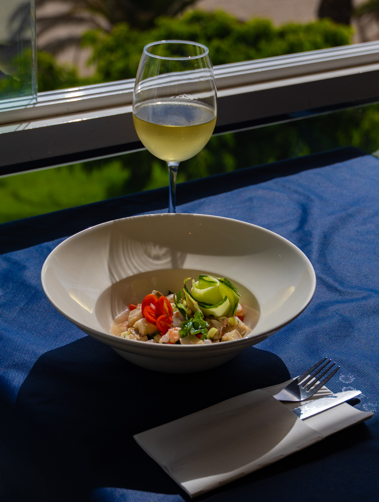

Cumpleaños en un restaurante con vistas al mar en Tenerife: ideas
Celebra un cumpleaños inolvidable en un restaurante con vistas al mar en Tenerife. Descubre opciones en Costa Adeje y personaliza cada detalle para una experiencia única.
Leer más